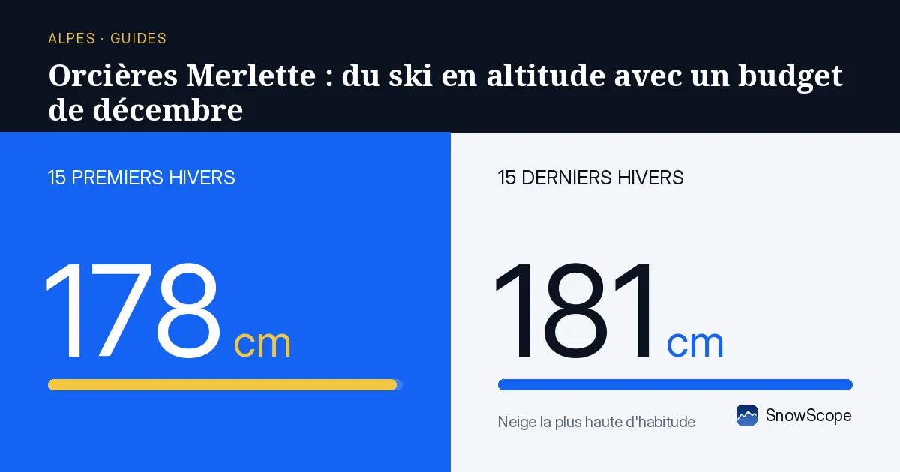

Orcières Merlette : du ski en altitude avec un budget de décembre
Si vous voulez skier en décembre sans trop dépenser, Orcières Merlette est un choix solide car ses remontées mécaniques les plus basses démarrent haut, à 1 826 m. Ce point de départ élevé permet de garder la neige au sol même au début de l'hiver, quand d'autres stations sont encore vertes.
Consultez les prévisions neige en temps réel pour Orcières Merlette sur l'application SnowScopeHauteurs de neige, alertes poudreuse et carte 3D, gratuitement.
La réponse courte pour décembre
Orcières Merlette est située dans les Hautes-Alpes et dispose d'un domaine skiable balisé de 49 km de pistes et 26 remontées mécaniques. C'est une station modeste, mais son altitude est un avantage majeur pour les séjours en début de saison. Notre historique de neige sur 46 hivers passés montre que les conditions s'améliorent rapidement au cours du mois.
La première semaine de décembre, il y a 30 % de chances d'avoir 30 cm ou plus de neige à la base. À la dernière semaine du mois, ce chiffre monte à 74 % des hivers passés. Si vous cherchez une neige plus profonde, le milieu de la montagne à 2 278 m affiche 50 cm ou plus dans 78 % des hivers passés durant la dernière semaine de décembre.

Base et sommet : où se trouve la neige
La station se situe entre 1 826 m et 2 731 m, offrant un dénivelé de 905 m. En décembre, la hauteur de neige habituelle à la base est de 33 cm. Le 15 décembre, la hauteur habituelle est de 31 cm au bas et 104 cm au sommet des remontées. Cette haute altitude garantit que les pistes supérieures sont presque toujours prêtes pour le ski.
Notre historique de neige montre que le sommet des remontées a 30 cm ou plus de neige dans 100 % des hivers passés à partir du 8 décembre. Cependant, certaines années sont moins enneigées que d'autres. Dans environ 1 hiver sur 10, la hauteur à la base peut être inférieure à 9 cm en décembre. Le mois de décembre le moins enneigé à la base a été 2015-16, avec seulement 2 cm de neige.
Le côté budget
L'un des meilleurs atouts de cette station est le prix du forfait. Vous pouvez acheter un Pass Horizon adulte de 6 jours sur le site officiel à partir de 227 EUR. C'est un bon prix pour une semaine de ski dans les Alpes françaises, d'autant plus que le forfait inclut aussi l'accès à la piscine et à la patinoire.
En séjournant dans une station avec une base élevée comme celle-ci, vous réduisez le risque de devoir utiliser les transports pour atteindre la neige. Vous pouvez consacrer votre budget au séjour lui-même plutôt qu'à des déplacements quotidiens coûteux. Les 49 km de pistes balisées offrent assez de variété pour une semaine économique sur les pistes.
Orcières ou Les Orres
Il est utile de comparer Orcières Merlette avec Les Orres à proximité. Les Orres possède un domaine skiable un peu plus grand avec 54 km de pistes et 21 remontées mécaniques. Cependant, sa remontée la plus basse est à 1 554 m, ce qui est bien plus bas qu'à Orcières. Cette différence affecte la hauteur de neige au bas de la station.
En décembre, la base aux Les Orres a 23 cm de neige, contre 33 cm à Orcières. Le 15 décembre, la hauteur habituelle à la base des Les Orres est de 22 cm. Les prix aux Les Orres varient selon la date ; un forfait adulte 1 jour coûte 34 EUR début décembre, 38,50 EUR mi-décembre et 45,50 EUR après le 19 décembre. Bien que Les Orres soit une bonne option, Orcières offre un point de départ plus élevé pour votre journée de ski.
Première neige et évolution des hivers
Notre historique de neige montre que la première neige durable arrive généralement au sommet d'Orcières le 14 octobre et à la base le 3 novembre. Fait intéressant, la neige de décembre a en fait augmenté ici au fil du temps. Durant les 15 premiers hivers de nos relevés (1980-81 à 1994-95), la moyenne de décembre à la base était de 30 cm. Sur les 15 derniers hivers (2011-12 à 2025-26), cette moyenne est montée à 35 cm.
Au 13 novembre 2026, il y a actuellement 0 cm de neige à la base et 12 cm au sommet. Les prévisions pour les 7 prochains jours suggèrent 20 cm de neige fraîche à la base et 70 cm au sommet. À plus long terme, les perspectives sur deux semaines pour le milieu de la montagne et au-dessus montrent une fourchette de 70 cm à 106 cm de nouvelle neige, ce qui est un signe positif pour le début de saison.
Conseils aux skieurs
- Réservez le Pass Horizon 6 jours sur le site officiel à partir de 227 EUR afin d'inclure l'accès à la piscine et à la patinoire.
- Visez la semaine du 22 au 28 décembre si vous voulez les meilleures chances d'avoir une base de 50 cm de neige, ce qui arrive dans 48 % des hivers passés.
- Restez sur les pistes au-dessus de 2 278 m si les pistes inférieures manquent de neige, car le sommet a 30 cm ou plus dans 100 % des hivers passés après le 8 décembre.
- Consultez la bulletin des avalanches avant de skier hors-piste, surtout que le pic habituel de la saison au sommet est de 307 cm.
Autres cartes (sites externes)
Références et crédits
- Orcières, official ticketing, winter 2026-27 pass.orcieres.com/en/ticketing
- Les Orres, official ski pass prices 2026-27 www.lesorres.com/forfaits-de-ski
- SnowScope, December snow at three heights and today's snow map snowscope.app/
À propos de ces chiffres
Chiffres de neige : historique SnowScope, 46 hivers passés (1980-81 à 2025-26) à trois altitudes de chaque station (un modèle du passé corrigé de l'altitude : une estimation pour une zone, pas des mesures de la station) ; chiffres de décembre calculés à partir des hauteurs quotidiennes de ces hivers. Neige actuelle et tendance à deux semaines : prévisions SnowScope (tendance ECMWF et GFS, une fourchette, pas une promesse). Remontées et pistes : cartographie OpenSkiMap. Prix : pages officielles des stations ci-dessous, lues le 2026-11-13 ; les prix peuvent changer, vérifiez avant de réserver.
Bulletins d'avalanche officiels: Météo-France – Bulletin d'estimation du risque d'avalanche
Citer ce bulletin
Pour la recherche, l'enseignement ou la presse : chiffres et graphiques réutilisables librement sous CC BY 4.0 avec cette citation.
SnowScope (2026), Orcières Merlette : du ski en altitude avec un budget de décembre, https://snowscope.app/blog/fr/2026/11/orcieres-merlette-december-ski-budget-snow-2026.html, consulté le 2026-11-14
SnowScope (Atlas Labs). (2026, November 14). Orcières Merlette : du ski en altitude avec un budget de décembre. SnowScope snow reports. https://snowscope.app/blog/fr/2026/11/orcieres-merlette-december-ski-budget-snow-2026.html
BibTeX
@misc{snowscope2026orcieresmerlettedecember,
author = {{SnowScope (Atlas Labs)}},
title = {Orcières Merlette : du ski en altitude avec un budget de décembre},
year = {2026},
month = nov,
howpublished = {\url{https://snowscope.app/blog/fr/2026/11/orcieres-merlette-december-ski-budget-snow-2026.html}},
note = {Published 2026-11-14 19:21 UTC; accessed 2026-11-14}
}· CC BY 4.0 · Méthodes, données et outils →
Orcières Merlette : neige et température selon l'altitude, cet hiver vs l'hiver dernier (outils) →
Suivre Orcières Merlette
Gratuit : un message quand la neige arrive, et la météo chaque matin.
Autres bulletins neige

Bonneval-sur-Arc affiche 52 cm en altitude le 8 novembre. Les semaines 10-11 correspondent à la pointe de la saison neigeuse. Découvrez ce qu'il faut emporter selon les prévisions.

Les hauteurs de neige en Alpes sont en retrait par rapport à la normale en début novembre, avec seulement 55 cm dans les meilleures stations au 3 novembre.

Prévisions de neige fraîche pour les Alpes jusqu'à début décembre. Saint François Longchamp en tête avec 228 cm attendus sur 14 jours, en commençant par 35 cm jeudi.